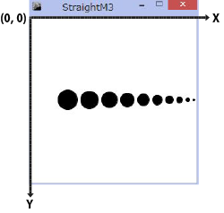
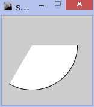

基本図形

Processingには、線や円など２次元の基本図形を描く関数が用意されています。
引数に、図形を描く位置や大きさなどを、整数(int型)あるいは実数(float型)で指定します。図形の位置は、ウィンドウ上の座標の原点がどこにあるかで、値が変わります。デフォルトでは、原点(0, 0)は左上隅です。 また、図形の位置を図形の中央か左上角で表すかはその時の設定で異なります。
基本図形を描く関数
■ point(x, y) 座標(x,y)に点を描きます。■ line(x1, y1, x2, y2) (x1, y1)と(x2, y2)との間に直線を描きます。
■ ellipse(x, y, width, height) 楕円を描きます。引数の意味はellipseMode()の指定により異なります。
■ rect(x, y, width, height) 矩形(長方形)を描きます。引数の意味はrectMode()の指定により異なります。
■ triangle(x1, y1, x2, y2, x3, y3) 三角形を描きます。3つの頂点の座標を指定。
■ quad(x1, y1, x2, y2, x3, y3, x4, y4) ４辺の多角形を描きます。４つの頂点の座標を指定。

■ arc(x, y, width, height, start, stop)
円弧を描きます。最初の4つの引数の意味はellipseMode()の指定により異なります。startとstopはそれぞれ円弧をはじめる位置、終わる位置を角度で指定(時計3時の位置が0、時計回りに角度は大きくなる)。角度はラジアン単位で指定します。度をラジアン単位にするにはradians(度単位の角度)を使います。
【例】arc(50,50,150,150,radians(0),radians(120)); 円の中央を(50, 50)の位置に、直径150で、120度の扇形を描く。
図形位置の指定
■ rectMode(MODE)矩形を描くときの座標の指定の仕方を設定します。デフォルトはCORNER。
引数の値 CORNER：左上角の座標と幅と高さで描く矩形を指定。
CORNERS：対角線上で向かい合う2つ角の座標で描く矩形を指定。
CENTER：中央の座標と幅と高さで描く矩形を指定。
■ ellipseMode(MODE)楕円を描くときの座標の指定の仕方を設定します。デフォルトはCENTER。
引数の値 CORNER：左上角の座標と幅と高さで描く楕円を指定。
CORNERS：左上角の座標と右下角の座標で描く楕円を指定。
CENTER：中央の座標と幅と高さで描く楕円を指定。